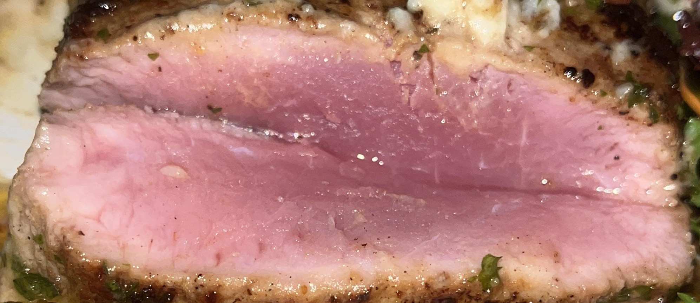
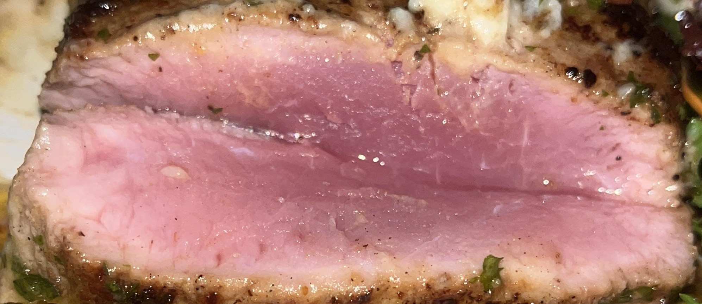

📍 Resort Information & Location
👋 My Arrival
When I arrived at Semaya Beach Resort, the location near Crystal Bay looked promising. But problems started immediately.
No Drinking Water Provided
After settling in, I looked for complimentary water bottles - standard in most hotels. There were none. I called the front desk to request some. They sent up two sealed bottles with a bill for 160,000 Indonesian Rupees (approximately $10 USD).
When I complained about both the lack of complimentary water and the outrageous charge, management admitted they "should have" provided water in the room. But here's where it gets worse - they took away the sealed bottles I had ordered and replaced them with refillable containers.
In Indonesia, a 5-star resort should not be providing water in refillable, unsealed containers. Are the containers clean? Is the water properly filtered? Are the people handling it following proper hygiene protocols? All of these worries would be completely avoidable if they just provided complimentary sealed water in the first place, like every other 5-star resort does.

Not the best start to a supposedly 5-star experience.
🍽️ Restaurant - The Raw Chicken Incident
The Night It Happened
My date and I ordered rare beef for dinner. What arrived at our table looked wrong from the start, but we only realized the full horror after taking a bite. The texture and flavor were completely unlike any beef we'd ever tasted.
When we complained, Restaurant Manager Andika Putra came to our table. Despite both of us arguing that this was clearly not steak, he insisted multiple times that it was beef. He claimed it was just "a bad batch" - as if that somehow made serving raw mystery meat acceptable.

Restaurant Manager Andika Putra
What Happened Next
One of us got severe stomach cramps that same evening. The other suffered serious gastrointestinal illness 48 hours later.
 

Seeking External Verification
Doubting my own senses, I reached out to my friend who's a professional chef. Their response told me it definitely was not steak.


I posted the photo on a social media site that specializes in steak. Within hours, I received dozens of messages all confirming the same thing - this wasn't beef. The ultimate proof? I actually got BANNED from the forum because I posted a picture of non-steak, and they only allow steak photos!


Management Response Timeline


Operations Manager Sindra Sindrawan
The Kitchen Test
We went to the kitchen where management cooked up what they claimed was the same meat. This time, it looked and tasted exactly like beef - proper beef. Yet they still insisted this was identical to what they'd served me two days earlier.

Real beef (Day 3)
What I was served (Day 1)
AI Analysis Proves the Truth
Standing there in the kitchen, I opened ChatGPT and took a photo of the freshly cooked meat. The AI immediately confirmed it was definitely beef.

I then uploaded the photo of my original meal from two days prior. ChatGPT initially thought it was Ahi Tuna. When I clarified it was meat, not fish, the AI concluded it couldn't be beef due to the incorrect color and texture. It added that chicken or pork would NEVER be served raw by a reputable resort.

Medical Consequences & Resort's Refusal
I told them firmly: "I will not be gaslighted into thinking I ate steak. I've been eating steak for 40 years."
The meat was either chicken or pork, each carrying different health risks when consumed raw. Since I didn't know which it was, I had to visit a doctor for stool testing to check for parasites. The worst part? The resort refused to pay for the medical visit, even though they were the ones who served me raw meat.

🚿 Bathroom Conditions
The bathroom problems started the moment I turned on the faucet. Yellow water came pouring out - not slightly discolored, but distinctly yellow.
The shower was equally disappointing. The "hot" water was warm at best and ran out completely after about 15 minutes. I prefer long, relaxing showers on vacation - that was impossible here.
The Open-Air Nightmare
The toilet had an open-air design with zero sound privacy. This wouldn't normally be a huge issue, but when you're suffering from severe stomach problems after eating raw chicken, it becomes a nightmare. My neighbors could hear every embarrassing sound, and I could hear them conversing from my bathroom.

To make matters worse, they placed smoking and non-smoking rooms directly next to each other. Thanks to the open-air design, cigarette smoke constantly wafted into our non-smoking room.

🧹 Housekeeping Standards
The housekeeping staff, while friendly, had one major hygiene issue - they cleaned the rooms while wearing their outdoor shoes.

Why would staff wear shoes inside while cleaning? These are the same shoes they wear outside, walking on streets and sidewalks. They then track all that dirt and contamination into our room while "cleaning" it. Basic hygiene standards completely ignored.
🚴 Bicycle Rental Safety Hazards
The resort offered bicycle rentals, but the bikes were death traps. They were old with flat tires and broken kickstands that caused them to fall over constantly.

The real danger came from the brakes - they squealed loudly and barely worked. No lights or helmets were provided, which is especially dangerous since the local roads have no lighting at night.
See for yourself:
💪 Fitness Facilities
The "gym" was laughable. It consisted of a tiny, unstable single-machine with extremely low weight capacity and a few plastic "dumbbells" that felt like toys. Completely unsuitable for any real fitness routine.

✋ Final Insult: The Broken Comb
Just before checking out, I used a wooden comb provided by the resort. It broke in half.
Having spent time in Thailand, I knew this was a terrible omen. In Thai culture, a broken comb during use is a serious bad omen - a warning of misfortune. The superstition says it must be thrown away immediately or the bad luck will manifest.
This perfectly encapsulated the entire stay - even the resort's combs were cursed.

The resort couldn't even provide functioning combs or safe bicycles, let alone safe food, clean water, or adequate gym equipment.
Overall Rating
ABSOLUTELY NOT RECOMMENDED
By the end, I couldn't wait to leave this 1-star joke of a resort.
The Real Problem: Management
The only saving grace is that the service staff were kind. This is a 1-star resort as a direct result of 1-star management.
Management Failures:
• Restaurant Manager Andika Putra - Lied directly to guests about raw chicken
• Operations Manager Sindra Sindrawan - Initially honest, then backtracked under pressure
• No senior management available on-site during crisis
• Attempted to gaslight guests about food safety incident
• Zero accountability for health violations
• Complete failure in basic hospitality standards
This resort represents everything wrong with hospitality management - prioritizing face-saving over guest safety, lying instead of taking responsibility, and operating with standards that wouldn't be acceptable at a roadside motel, let alone a resort claiming to offer a premium experience.